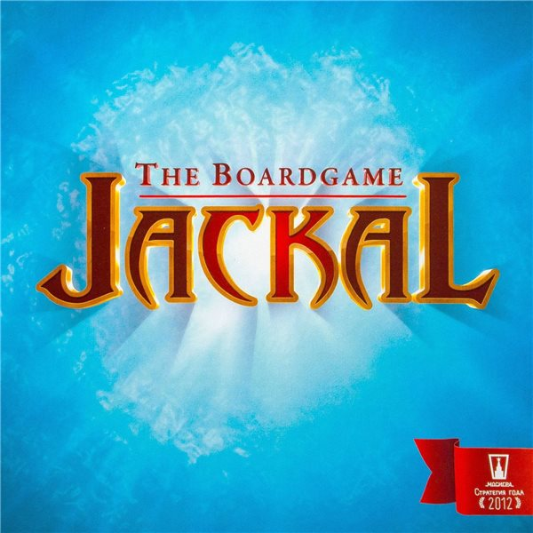

Шакал
«Шакал: Остров Сокровищ» — стратегическая настольная игра с уникальной механикой: клетки поля выкладываются в произвольном порядке, поэтому каждая партия не похожа на предыдущую. Пираты высаживаются на остров и ищут зарытое золото, а результат зависит от логики и стратегии, а не от кубика и везения. Игра рассчитана на 2–4 игроков, подойдёт взрослым и детям от 8 лет; партия длится 60–120 минут.
🎲
Правила игры
Посмотрите видео и почитайте PDF — и можно за стол!
Видео-правила
Правила в PDF
Источник правил: Hobby World